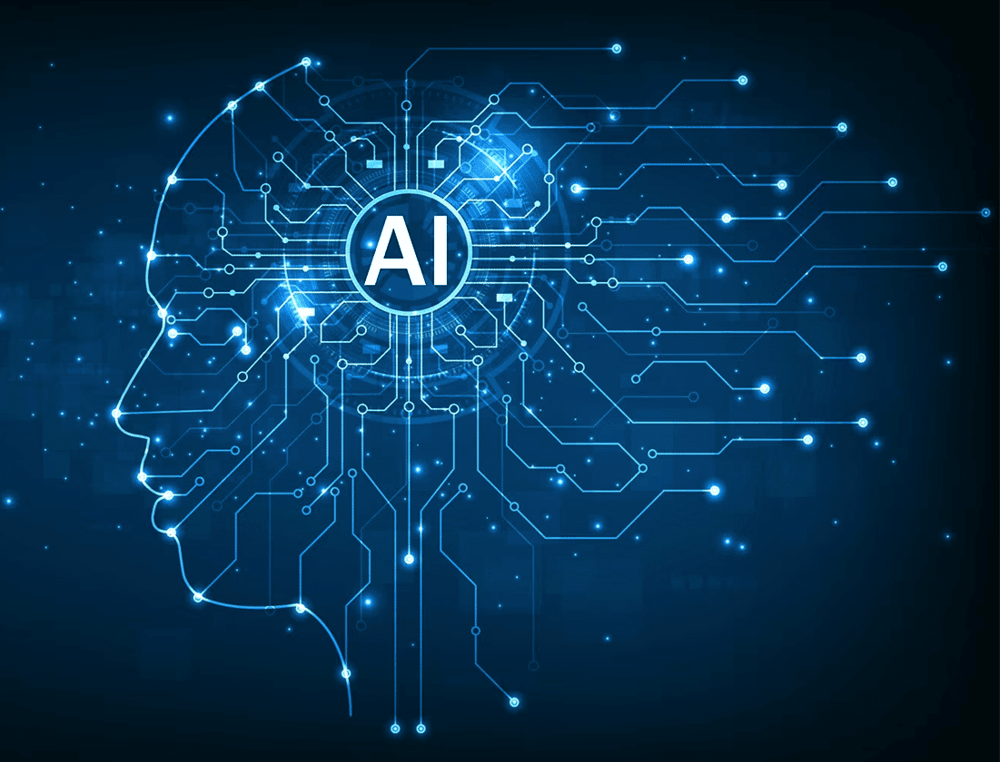

É o assunto do momento, entenda aqui um pouco mais sobre IA!
História, curiosidades e mais
Afinal, o que significa "Inteligência Artificial"?
Inteligência Artificial (IA) é a ingeligência, raciocínio e o apredizado apresentado por máquinas semelhante ao raciocínio humano. Esta área da computação busca desenvolver máquinas autônomas ou sistemas especialistas capazes de simular o pensamento humano e realizar uma miríade de tarefas complexas de forma independente, tais como capacidade de analisar dados em grande escala e fazer previsões/recomendações. É um campo que abrange muitas disciplinas, como ciência da computação, estatística, engenharia de hardware e software, linguística, neurociência e filosofia.
Alguns objetivos considerados tradicionais da pesquisa em IA incluem raciocínio, resolução de problemas, percepção, compreensão de linguagem natural e aprendizado.
Um pouco de história da IA
Apesar de ser um assunto que cresceu vertiginosamente nesses últimos tempos, o conceito de Inteligência Artificial não é tão recente assim. Aristóteles, por exemplo, já sonhava em substituir a mão-de-obra escrava por ferramentas autônomas, sendo esta possivelmente a primeira ideia de IA relatada, ainda que o termo ainda não existisse. O desenvolvimento mais forma dessa ideia ocorreu plenamente no século XX, na década de 50, com pensadores como Allan Turing, Herbert Simon e John McCarthy. Turing escreveu o artigo "Computing Machinery and Intelligence", onde propôs o famoso "Teste de Turing" para avaliar a inteligência de uma máquina. Simon e McCarthy, por sua vez, organizaram a Conferência de Dartmouth em 1956, que é considerada um dos marcos iniciais da pesquisa em IA. Em tempos mais recentes, a IA evoluiu rapidamente com o avanço da computação, algoritmos de aprendizado de máquina e redes neurais. Hoje, a IA é amplamente aplicada em diversas áreas, como reconhecimento de voz, visão computacional, processamento de linguagem natural e sistemas de recomendação, o que a torna uma parte essencial da tecnologia moderna.
O que são modelos de linguagem de Inteligência Artificial generativos?
A Inteligência Artificial generativa (as vezes chamada de IA gen) se baseia em modelos sofisticados de aprendizado de máquina chamados de "deep learning" são algortimos que simulam os processos de aprendizado e tomada de decisões do cérebro humano. São os modelos mais hypados da atualidade e existem inúmeros exemplos bem conhecidos, tais como: ChatGPT, Gemini, Deepseek e Copilot. Esses modelos funcionam identificando e codificando os padrões e relacionamentos em grandes quantidades de dados e, em seguida, usando essas informeções para compreender solicitações dos usuários e responder como conteúdo "novo" relevante.
A IA generativa oferece grandes benefícios de produtividade para pessoas, porém apresenta desafios e riscos bastante significativos. Por um lado, ela pode automatizar tarefas repetitivas, gerar conteúdo criativo e auxiliar na tomada de decisões. Por outro lado, a IA generativa também levanta preocupações éticas, como a possibilidade de gerar desinformação, violar direitos autorais e criar conteúdo prejudicial. Isso porque além de retornar textos, ela pode criar imagens, vídeos, código e até simulações.
Bônus e Ônus da IA generativa
A IA generativa tem o potencial de tranformar radicalmente a forma como trabalhamos, estudamos e vivemos. Ela pode corrigir exercícios escolares ou até acadêmicos, automatizar atendimentos à clientes, ajudar em entrevistas ou reuniões, ou seja, ela pode ser uma grande aliada na produtividade e acessibilidade, se usada de forma ética e responsável.
Em contrapartida, a IA generativa pode violar direitos autorais, roubando conteúdo de autores e artistas, gerar imagens e vídeos falsos tão reais que podem enganar pessoas e até julgar errôneamente pessoas minorizadas, perpetuando preconceitos. Nesses casos, o treinamento desses modelos generativos é importantíssimo para evitar esses problemas.
Conheça um pouco mais alguns modelos de linguagem

ChatGPT
Desenvolvido pela OpenAI, é um modelo de linguagem avançado capaz de compreender e gerar textos em linguagem natural, ficou muito conhecido pela "trend" do estúdio Ghibli o outras.
Deep Seek
DeepSeek é um modelo de linguagem chinês muito conhecido pelo seu baixo custo e bater de frente com a primeira versão do ChatGPT.
Gemini
Antigo Bard e da Google, Gemini é um modelo que sempre aparece nas buscas do próprio Google, resumindo as informações buscadas pelo usuário.